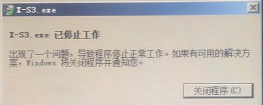

如下图：80XS软件出现如下情况，则该设备软件需要更新至最新版本

更新步骤如下：
（1）解压XS2037.zip：
解压XS2037.zip，将文件放到D盘目录下（如下图）

（2）替换参数文件：
将原来软件路径下的param文件夹打开，复制“conifg.my”“user.my”和“variety.my”三个文件到“D:\XS2037\params”和“D:\XS2037\backup”路径下覆盖掉“D:\XS2037\params”和“D:\XS2037\backup”路径下的三个文件（如下图）

（3）修改快捷方式：
将原桌面上的快捷方式和启动项文件夹里的快捷方式删除，从“D:\XS2037\X-S3.exe”复制X-S3.exe快捷方式到桌面和启动项文件夹里即可。
（4）更改设置：
重新启动设备后检查如下图有无调试模式来确定是否升级软件正确

其次点击“设置”进入“系统设置”界面，选择“图像保存方式”和“报警设置”如下图

（5）检查：
检查之前软件调试的参数与更新后的软件参数，判断是否会影响客户生产；
桌面快捷方式和启动项文件夹里快捷方式是否更换正确。
注意：主界面调试模式在工程师模式下才可点击上，当参数调试结束后客户生产时建议关闭。
如对以上有所疑问，可以企业微信联系软件工程师乐翠。